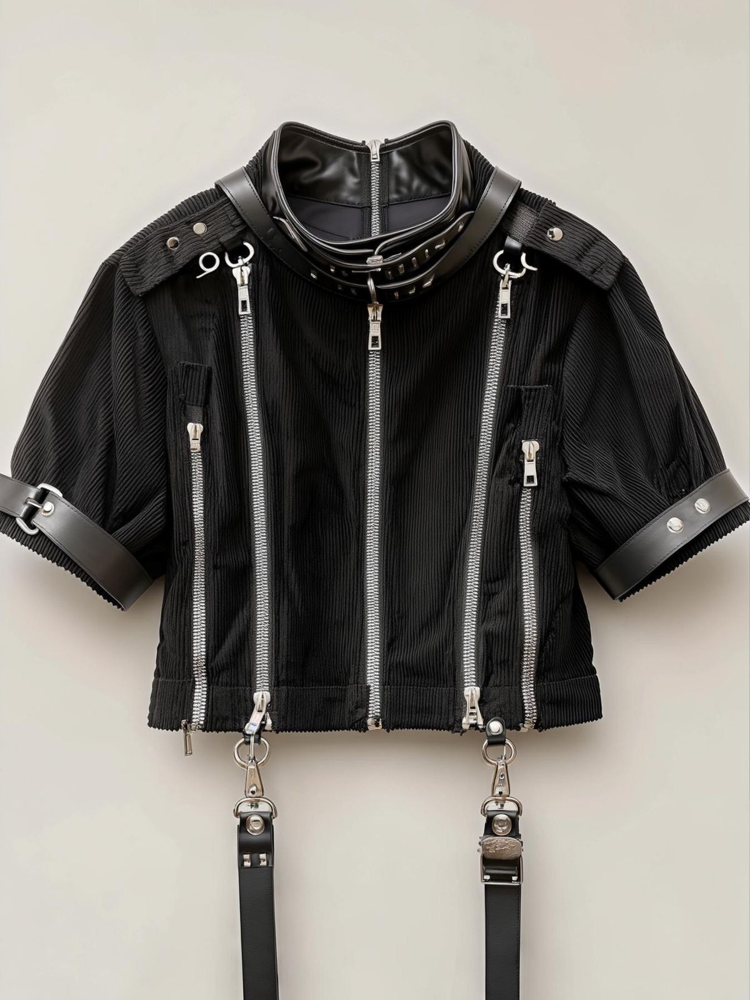

Shadow Lock
$ 4.095,29
Projetada para aqueles que transformam atitude em identidade, a Shadow Lock combina elementos industriais, detalhes em couro e acabamentos metálicos em uma peça de presença marcante. Os zíperes frontais e as fivelas utilitárias reforçam sua estética inspirada na arquitetura brutalista das megacidades, enquanto a construção premium garante conforto e versatilidade para qualquer cenário urbano.
Especificações
- Tecido premium de alta durabilidade
- Detalhes em couro legítimo e acabamentos metálicos
- Design industrial inspirado na estética cyberpunk
- Produção limitada e numerada da Vault Series
-
Vault Series 库藏系列